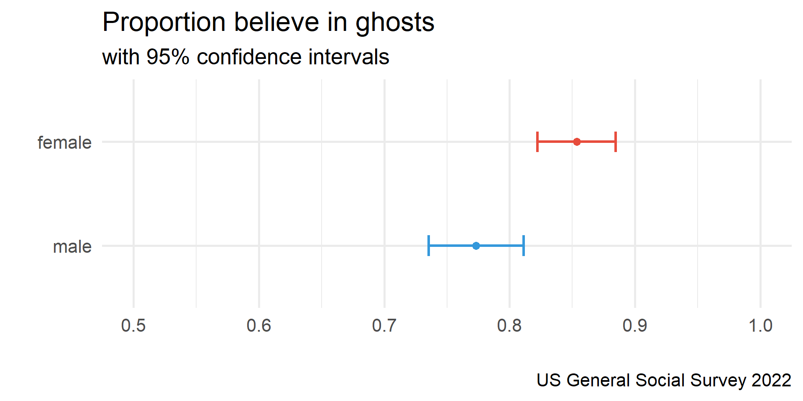
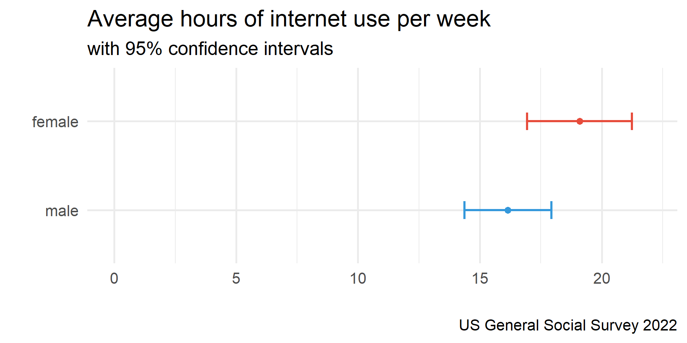

Statistical Tests I
Agenda
- Confidence Intervals
- Hypothesis Testing
Learning objectives
By the end of the lecture, you will be able to …
- Use R to calculate confidence intervals for means and proportions
- Use R to conduct one and two sample t-tests
Code-along 05
Download and open code-along-05.qmd
Mini-task
Install the Rmisc() package, available on CRAN.
Run the code chunk in your code-along.
OR: Copy and paste the code into your Console pane. Then hit “Enter”.
Mini-task
Load the standard packages and our new Rmisc() package.
Mini-task
Load the 2022 GSS data.
Variables
wwwhrNot counting e-mail, about how many minutes or hours per week do you use the Web?
postlifeDo you believe there is a life after death?
childsHow many children have you ever had?sexRespondent’s sex
Mini-task
Create a dataset named my_data with the variables wwwhr, postlife, childs, & sex with no missing data
Confidence Intervals
Review: summarise()
# A tibble: 1 × 3
n mean sd
<int> <dbl> <dbl>
1 970 17.7 22.3

summarise() with equation
Code Meets Question
What can we infer about the population mean based on this confidence interval?
summarise() + CI()
# A tibble: 1 × 5
n mean_wwwhr sd_wwwhr lowCI_wwwhr hiCI_wwwhr
<int> <dbl> <dbl> <dbl> <dbl>
1 970 17.7 22.3 16.3 19.1Neat! But how confident are we?
summarise() + CI()
# A tibble: 1 × 5
n mean_wwwhr sd_wwwhr lowCI_wwwhr hiCI_wwwhr
<int> <dbl> <dbl> <dbl> <dbl>
1 970 17.7 22.3 15.8 19.5CIs & percision
95% confidence intervals
How does a 95% confidence interval differ from a 99% confidence interval in terms of width and certainty?
CIs (wrong) with proportions
# A tibble: 1 × 5
n mean_ghosts sd_ghosts lowCI_ghosts hiCI_ghosts
<int> <dbl> <dbl> <dbl> <dbl>
1 970 1.19 0.389 1.15 1.22This doesn’t work because the values aren’t coded 0 and 1.
CIs (correct) with proportions
# A tibble: 1 × 5
n mean_ghosts sd_ghosts lowCI_ghosts hiCI_ghosts
<int> <dbl> <dbl> <dbl> <dbl>
1 970 0.814 0.389 0.782 0.847Comparing CIs

Comparing CIs

Hypothesis Testing
t.test()
Performs one and two sample t-tests. To use this function, we’ll need to specify a few things:
- variable of interest
- mu (H0): a number indicating the true value of the mean
- alternative hypothesis (H1): “two.sided”, “greater”, or “less”
t.test() in action
In your family sociology course you learned that fertility rates have been dropping.
You used to think that people had 2 children, on average. But, now you suspect that people are having fewer than 2 children.
How do you test your hypothesis?
Which of these equations represents your research hypothesis?
- H1: µ ≠ 2
- H1: µ = 2
- H1: µ < 2
- H1: µ > 2
Which of these equations represents your null hypothesis?
- H0: µ ≠ 2
- H0: µ = 2
- H0: µ < 2
- H0: µ > 2
Review: Summary Statistics
# A tibble: 1 × 4
n mean median sd
<int> <dbl> <dbl> <dbl>
1 970 1.79 2 1.64Is the difference between our sample mean and 2 statistically significant or could we have gotten this mean simply by chance (sample variation)?
Review: CIs
# A tibble: 1 × 7
n mean median sd se lower upper
<int> <dbl> <dbl> <dbl> <dbl> <dbl> <dbl>
1 970 1.79 2 1.64 0.0526 1.66 1.93Does the confidence interval overlap with 2? What does that tell you?
One sample t.test() for means
One Sample t-test
data: my_data$childs
t = 34.102, df = 969, p-value < 2.2e-16
alternative hypothesis: true mean is not equal to 0
95 percent confidence interval:
1.690587 1.897041
sample estimates:
mean of x
1.793814 H0 = 0 by default
One sample t.test() for means
One Sample t-test
data: my_data$childs
t = -3.9197, df = 969, p-value = 4.744e-05
alternative hypothesis: true mean is less than 2
95 percent confidence interval:
-Inf 1.88042
sample estimates:
mean of x
1.793814 H0 = 2; one-tail test
Assuming an α level of .05, should you reject the null hypothesis?
- No, because the 𝛼 level of .01 is greater than the p-value (< .000).
- No, because the p-value (< .000) is less than the 𝛼 level of .01.
- Yes, because the p-value (< .000) is less than the 𝛼 level of .01.
Which of these statements best summarizes your conclusion?
- Our evidence proves that people have fewer than two children, on average.
- People, on average, have two children.
- On average, the number of children people have is statistically significantly lower than two.
two sample t.test() in action
Are the proportions of men and women who believe in ghosts statistically significantly different?
Welch Two Sample t-test
data: my_data$ghosts by my_data$sex
t = -3.2072, df = 923.29, p-value = 0.001387
alternative hypothesis: true difference in means between group male and group female is not equal to 0
95 percent confidence interval:
-0.1291289 -0.0310882
sample estimates:
mean in group male mean in group female
0.7733051 0.8534137 Assuming an α level of .05, what do you conclude?
- There is no statistically significant difference between men and women in belief in ghosts.
- Men are significantly more likely than women to believe in ghosts (p < .05).
- Women are significantly more likely than men to believe in ghosts (p < .05).
Aside: paired t.test()
Independent group t-test
Do two subsamples have the same mean?
Think Like a Statistician
Think Like a Statistician
Do women have more years of education (educ) than men, on average?
Are the proportions of men & women who support abortion for any reason (abany) statistically different?
Do fewer men than women support gun laws (gunlaw)?
Think Like a Statistician
Welch Two Sample t-test
data: gss22$educ by gss22$sex
t = -0.38076, df = 4035.7, p-value = 0.3517
alternative hypothesis: true difference in means between group 1 and group 2 is less than 0
95 percent confidence interval:
-Inf 0.1144853
sample estimates:
mean in group 1 mean in group 2
14.14338 14.17786
Welch Two Sample t-test
data: gss22$abany by gss22$sex
t = -1.0701, df = 1317.7, p-value = 0.2848
alternative hypothesis: true difference in means between group 1 and group 2 is not equal to 0
95 percent confidence interval:
-0.08169512 0.02402811
sample estimates:
mean in group 1 mean in group 2
0.5786164 0.6074499
Welch Two Sample t-test
data: gss22$gunlaw by gss22$sex
t = -8.9698, df = 2476.6, p-value < 2.2e-16
alternative hypothesis: true difference in means between group 1 and group 2 is not equal to 0
95 percent confidence interval:
-0.1872801 -0.1200856
sample estimates:
mean in group 1 mean in group 2
0.6450593 0.7987421